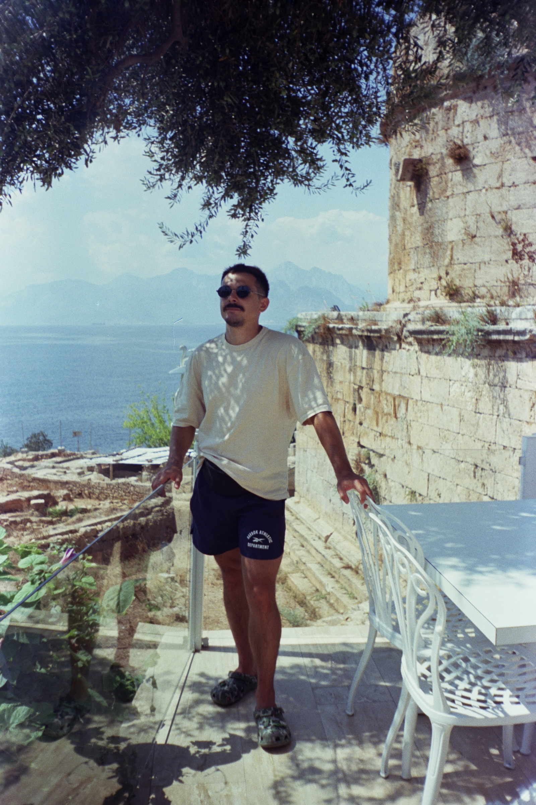
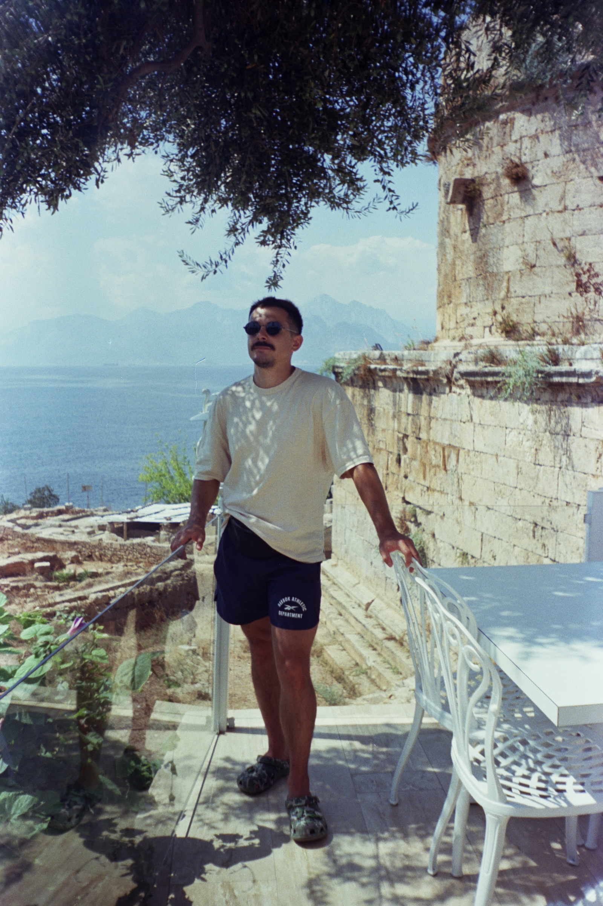

Embarking on my journey as a web developer, I am Alexander Stepanov,
an enthusiastic novice in the world of IT. Currently, I am actively
mastering JavaScript, React, and other modern technologies that
enable the creation of beautiful and functional websites. My studies
at Elbrus Bootcamp present an exciting challenge, akin to ascending
uncharted peaks.
Learning from my background as a railway engineer, I bring extensive
experience in the construction industry. I have contributed to
construction sites, conducted laser scanning on the renowned Lakhta
Center project, worked as a designer and BIM-coordinator, and delved
into 3D and 4D modeling. This journey has honed my analytical
thinking, teamwork skills, and ability to integrate modern
technologies into projects.
Being an avid traveler and hiker, I find joy in exploring nature.
Among my most cherished adventures are horseback riding in the Altai
Mountains and swimming in crystal-clear alpine lakes. A highlight
was a 7-day hike in Prielbrusie, and I aspire to summit Elbrus
itself one day.
Regular physical activity energizes my life. I have practiced karate
for nine years, ventured into hand-to-hand combat, skiing, and
boxing, and now I passionately engage in CrossFit. These experiences
enrich my life and fuel my drive to stay active.
Unwinding during my free time, I enjoy playing board games with
friends and watching captivating films. My fascination with
technology began in childhood, tinkering with flashing phones,
building computers, and exploring how things work. This passion
guided my decision to pursue a career in IT.
Savoring the simple joys of life, I adore animals and delicious
food—my delightful weaknesses! Looking ahead, I dream of traveling
to Thailand, China, Japan, and Korea to immerse myself in their
cultures and savor their culinary treasures.
I believe that perseverance and passion for learning will help me
achieve my goals and become an IT professional.


 
